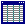

Getting Started
This lesson gets you started using Alpha Anywhere. You install Alpha Anywhere, examine a sample database application, and become familiar with the Alpha Anywhere work environment.
Contents
You must first install Alpha Anywhere before you can proceed with the tutorial lessons. To install Alpha Anywhere:
Insert the Alpha Anywhere CD into your computer CD-ROM drive.
Select Run from the Windows Start menu.
In the Run dialog box, type "D:\setup.exe", or click Browse, navigate to your CD-ROM drive, select Setup, and click Open.
Click OK.
The setup program guides you through the installation process.
Alpha Anywhere release notes contain information about undocumented features as well as errors in the documentation and the program. After installing Alpha Anywhere, you can access the release notes in the Books directory of your Alpha Anywhere program folder, or from the Alpha Anywhere Help menu, by selecting Help > View Release Notes (requires an Internet connection)
Alpha Software strongly recommends that you read the release notes. After installing your copy of Alpha Anywhere, you are ready to proceed with the tutorial lessons.
To start Alpha Anywhere:
From the Windows Start menu, select All Programs > Alpha Anywhere> Alpha Anywhere. Note : If you have not registered or activated Alpha Anywhere, a message appears requesting that you do so. The Welcome to Alpha Anywhere screen appears.
The Alpha Anywhere screen appears. The Alpha Anywhere screen provides you with options for getting started using Alpha Anywhere. The blue entries present typical menu commands for creating a new database and opening existing databases. Below the blue entries, Alpha Anywhere displays a list of the last 30 databases opened in Alpha Anywhere. as you work with Alpha Anywhere, your recently used databases appear on the list.
You start the tutorial lessons by opening the <span class=Screen>AlphaSports</span> sample database application.
AlphaSports is a sample application designed to support a sporting goods business. The data in the sample database includes information on AlphaSports customers, employees, invoices, products, and vendors.
To open AlphaSports :
Select "AlphaSports" from the list of databases, and click OK. The AlphaSports application opens and the Invoice Menu appears.
The Invoice Menu is a Alpha Anywhere custom form that presents a main menu for the AlphaSports application. Use the Invoice Menu to look at the AlphaSports application components. Examine its features, functionality, and layout to see some of the capabilities of Alpha Anywhere.
In the next procedure, you become familiar with the Alpha Anywhere work environment.
An Alpha Anywhere database application is composed of multiple components or objects. To examine the database objects in AlphaSports, you must exit from the Invoice Menu and open the Control Panel.
In the custom toolbar above the Invoice Menu, click Exit AlphaSports. The Alpha Anywhere Control Panel appears.
The Control Panel is the Alpha Anywhere main menu and core user interface. By default, it has the following tabs: Tables/Sets, Forms, Browses, Reports, Letters, Labels, Operations, and Code. You can hide or show a Control Panel tab by right-clicking on it, and selecting or de-selecting it.
 Note : If your Alpha
Anywhere Control Panel is not displaying the tabs
shown above, right-click on the Tables/Sets
tab, and select to display the other tabs.
Note : If your Alpha
Anywhere Control Panel is not displaying the tabs
shown above, right-click on the Tables/Sets
tab, and select to display the other tabs.
The following table presents a list of database object types and describes them.
|
Icon |
Object |
Description |
|
|
Table |
Stores and arranges information in a database. A table is made up of rows (records) and columns (fields). |
|
|
Set |
A collection of data from related tables, linked together in a logical way. |
|
|
Form |
A page-like layout in which you view, enter, and change data. |
|
 |
Browse |
Displays data in a tabular format of rows and columns, like a spreadsheet layout. Also used to view and edit data. |
|
Report |
A flexible layout used to output data. Report data can be sorted, grouped, calculated, summarized, and contain graphics. | |
|
|
Letter |
A layout used for printing traditional mail-style letters. Letters can reference data from a table or a set, and contain personalized text. |
|
|
Label |
A layout generally used to generate small labels, such as mailing labels, file folder labels, identification cards, and name tags, based on data from a table or a set. |
|
|
Operation |
A process you define that modifies data, performs calculations, imports data from different programs, exports data to a different file format, or generally manipulates data. |
|
|
Code |
A series of steps that Alpha Anywhere can use to perform actions or customize your data. |
In the Control Panel, you can right-click on a database object to set properties or perform some actions, using the pop-up menu. For example, if you right-click on a table object, you can use the menu to open the table Default Form and Default Browse, edit the table structure and field rules, rename the table, and perform other actions.
You can use the Alpha Anywhere standard toolbar to create a new database, open and close a database, add or remove tables from a database, change the database object icon view, and close an Alpha Anywhere application. Picture
{kind=link}
If you forget which command a toolbar button executes, position your mouse pointer over it. Alpha Anywhere displays Bubble Help, pop-up text that describes its function.
The following figure shows the Alpha Anywhere standard toolbar and lists its functions.
Click on the AlphaSports objects, menus, and buttons to become familiar with their functions.
Select an AlphaSports table in the Control Panel, and click the Detail View button on the tool bar.
Open and examine some tables, sets, forms, browses, reports, letters, labels, operations, and code to see many examples of how you can design and use a database application.
Control Panel Buttons
Using the Control Panel buttons, you can create, manage, and manipulate database objects, modify selected objects, preview or activate objects, or delete them.
The following table shows the Control Panel buttons and describes their action.
|
Button |
Action |
|
|
View data in a Browse, Form, Report, Letter, or Label. |
|
|
Modify the design of a selected database object. |
|
|
Create a new database object. |
|
|
Delete a selected database object. |
|
|
Preview data in a report, email, printer, or file. |
|
|
Execute an Operation or code (script). |
|
|
Display large icons in the Control Panel file list. |
|
|
Display small icons rows in the Control Panel file list. |
|
Display small icons in columns in the Control Panel file list. | |
|
|
Display details in the Control Panel file list. |
In this lesson, you installed and got started using Alpha Anywhere. First, you examined the AlphaSports sample database application. Next, you viewed and became familiar with the database objects in the Alpha Anywhere Control Panel, and the menus and control buttons used to manipulate these objects.
What's Next?
See Working with Records, to learn about viewing and entering data in Alpha Anywhere. You learn about Form and Browse views, and working with database records.